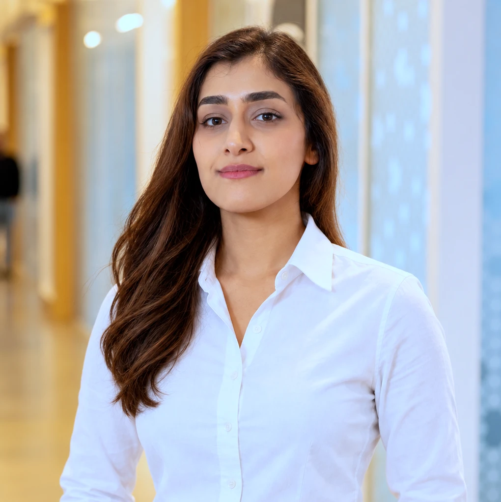

Mahta Ramezanian-Panahi
Final-year Ph.D. candidate in Computer Science at Mila – Quebec AI Institute and Université de Montréal (DIRO), in the AAI CERC lab of Prof. Irina Rish.

Research interests
- Representation learning and identifiability
- Foundation models and tokenization for multivariate time series
- Dynamical systems and world models
- Complex systems
Education
-
2023 – present
Ph.D. candidate in Computer Science, Université de Montréal & Mila – Quebec AI Institute
-
2017 – 2019
M.Sc. in Physics and Astronomy, University of Waterloo
Experience
-
Jun – Sep 2026
Scientist in Residence, Mila Applied Machine Learning Research Team (AMLRT) & Seoul AI Hub, Montreal15-week residency in partnership with the City of Seoul and Seoul AI Hub. Designed personalized, data-driven product recommendation and analysis systems for a consumer product line.
-
Sep – Dec 2025
Resident Scientist, SEVO Bioscience, Quebec & Nova ScotiaProtein language models and design: alignment, overlay, and conservation-scoring tools for large-scale sequence modeling, and foundation models integrating heterogeneous scientific databases. Built an active-learning framework that feeds experimental results back into the training pipeline.
-
Jun – Aug 2023
Research Engineer, Hexoskin, MontrealProduction ML for personalized product analytics: automated preprocessing, quality control, time-series feature extraction, and model retraining. Monitored performance, updated back-end systems, and resolved data-quality issues.
-
Apr 2020 – Jan 2022
Student Researcher, Mila, MontrealGenerative models with latent differential equations in Julia: domain-aware, interpretable inference of dynamics (JuliaCon 2021). Organized and moderated the Dynamical Systems Reading Group; advised the Innovation, Development, and Technologies team on its solutions portfolio.
-
2017 – 2019
Graduate Research, Teaching & Lab Assistant, University of WaterlooStatistical modeling of copolymer melts; simultaneous computation in MATLAB, Fortran, and Python. Ran lab and tutorial sessions and mentored 300+ undergraduate students.
Publications & preprints
- Cross-Modal World Models for Control in a Neural-Mass Network. Shared forward/inverse-dynamics world-model latents transfer across sensors and plan cross-modally without an alignment loss, outperforming contrastive alignment.
- NeuroBuilder: Auditable Agentic Data Curation for Neuro-Foundation Models. LLM agents that turn heterogeneous scientific datasets into validated, auditable data objects. OpenReview
- Bring Your Own EEG: Auditable Data Curation for Foundation Models. Interactive demo of the NeuroBuilder curation workflow. Workshop
- Validity Conditions for Geometry-Aware EEG Tokenization. In geometry-aware tokenization of multichannel time series, spatial validity and quantization matter more than backbone pretraining: discrete tokens feeding a Qwen3 causal LM, a collapse-aware reading of token cross-entropy, and language-pretrained vs. random backbones. OpenReview
- An Unfalsifiable Inverse Problem: Latent-Source Identifiability from Non-Stationary Timeseries. Synthetic-ground-truth critique showing that nonlinear-ICA and causal-representation-learning identifiability claims on observational multichannel recordings are unfalsifiable. OpenReview
- A Position on Causal Representation Learning Without Intervention. Argues that identifiability claims from observational data are unfalsifiable without synthetic-ground-truth or interventional benchmarks.
- Simulation-Augmented Classification of Interacting Dynamical Systems. Improved classification via interpretable random forests over features from large-scale simulated interacting dynamics.
- Effective Latent Differential Equation Models via Attention and Multiple Shooting. Video · Code
- Generative Models of Brain Dynamics. Paper
Talks & presentations
-
Sep 2026
Multimodal World Models: Alignment, Prediction, and Control. Poster, Simons Collaboration on the Physics of Learning and Neural Computation Annual Meeting, Simons Foundation, New York.
-
2026
OmnEEG: Unifying Spatial Embedding for Scalable Cross-Dataset EEG Foundation Models. Contributed talk; also chaired the Foundation Models I session. International Symposium on Forecasting (ISF), Montreal.
-
Oct 2025
Interoperable Foundation Models for Neural Time Series. Contributed talk, UNIQUE Scientific Retreat.
-
2025
Dynamics Identification for Multivariate Time Series. Lightning talk, Simons Collaboration Kickoff Workshop, Stanford.
-
2024
Time-contrastive Unsupervised Representation Learning for EEG Data. Accepted presentation, INCF Neuroinformatics Assembly.
-
Dec 2023
GOKU-UI: Ubiquitous Inference through Attention and Multiple Shooting. Oral spotlight, DLDE III Workshop, NeurIPS 2023, New Orleans.
-
Jun 2023
Generative Models for Neural Dynamics. Talk, UNIQUE Student Symposium, Université de Montréal. Video
-
2021
Generative Models with Latent Differential Equations in Julia. Lightning talk (co-author), JuliaCon 2021.
Software & projects
- OmnEEG: geometry-aware tokenization for multichannel time series. Converts variable-layout multichannel signals into fixed-length token sequences via parameter-free spatial bases (3D spherical harmonics / 2D spatial interpolation) that preserve channel topology; unifies heterogeneous datasets into one manifest-driven PyTorch pipeline with spatial-layout visualization. Open source.
- Time-series foundation model via LLM-vocabulary tokenization. Pretrains a transformer LM on multivariate time series by mapping them into a pretrained LLM's token space: a VQ-VAE quantizes signals into a codebook aligned to Qwen3's embedding/LM head, trained with next-token cross-entropy (LoRA, bf16, multi-node SLURM). Tests whether language-pretrained sequence priors transfer to a non-text modality.
- Schema-invariant transfer & pre-registered evaluation. Analytic spherical-harmonic tokenization yields a layout-invariant representation enabling zero-shot transfer across heterogeneous schemas (19–129 channels). Evaluated with pre-registered hypotheses, channel-holdout probes, scrambled-channel controls, and trivial baselines over 3 seeds.
- Earlier. Phase transition detection via CNN in quantum systems (code); deterministic vs. stochastic search for cargo planning optimization (code); fault tolerance and adversarial robustness in feedforward networks, C++ (code); time-varying graphical lasso for network inference (MATLAB).
Awards & honors
- 2026Mila Scientist in Residence (Seoul AI Hub & City of Seoul partnership)
- 2025Top-10 team (as a solo participant), EEG Foundation Challenge, NeurIPS 2025 Competition Track
- 2025IVADO Catalyst Grant, Regroupement 1, 80,000 CAD (foundation models for complex time-series dynamics)
- 2025Simons Collaboration Travel Award
- 2025Mila NeurIPS 2025 Travel Scholarship
- 2025Financement d'UdeM International
- 2025MoML @ MIT, selected admission award
- 2023UNIQUE Excellence Scholarship
- 2023Upper Bound Talent Bursary, North America
- 2022Amii Talent Bursary
- 2021UdeM Exemption Scholarship for International Students
- 2017 – 2019International Master's and Doctoral Student Award, Marie Curie Graduate Student Award, and Science Graduate Award, University of Waterloo
Service & volunteering
-
2025 – present
Student representative, Research Computing Committee (formerly IDT Committee), Mila
-
2024
Co-organizer, 8th Neural Scaling Workshop @ NeurIPS 2024: forum on challenges and advances in scaling foundation models, with speakers from OpenAI, MBZUAI, Vector Institute, and Snowflake.
-
2023
Reviewer, Workshop on Deep Learning and Differential Equations (DLDE) and New in ML Workshop, NeurIPS 2023
-
2020 – present
English instructor, Maison de l'amitié, Montreal: placement tests for incoming students and conversation classes.
-
2019 – 2021
Social media coordinator, Data for Good, Waterloo: coordinated regional events and record-breaking volunteer recruitment for datathons and data nights.